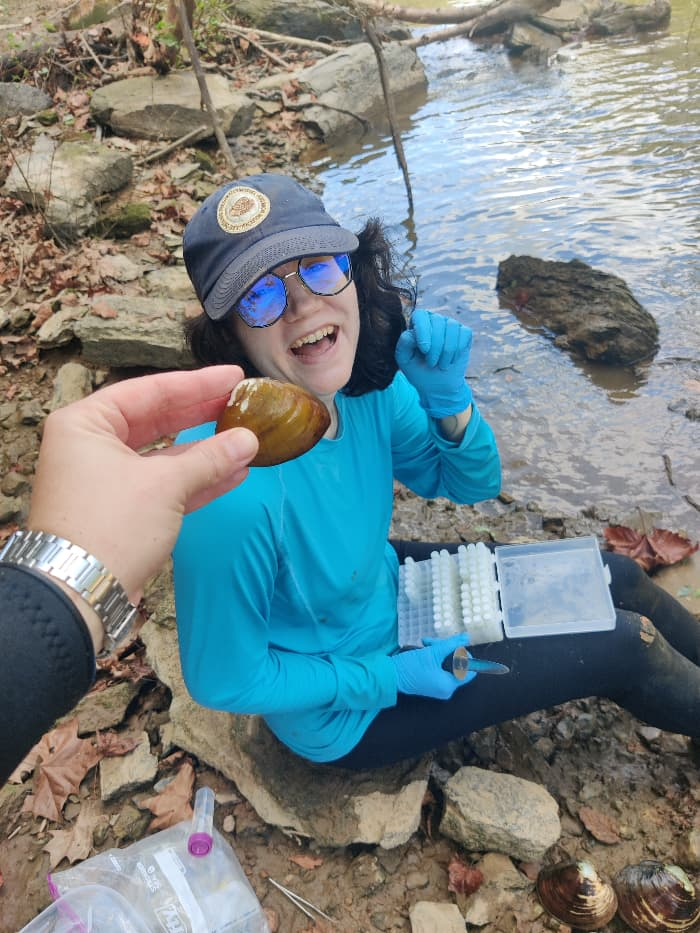

The Researchers
Our consortium brings together experts in malacology, genomics, and river ecology from across the Atlantic Slope.

Dr. Jamie Bucholz
Postdoctoral Fellow
Our consortium brings together experts in malacology, genomics, and river ecology from across the Atlantic Slope.

Postdoctoral Fellow